Every convergent sequence is bounded.
Let  and take
and take
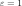
: there is with
with
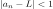
for , hence
for those
, hence
for those  . Then
. Then
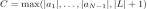
bounds every term.
Let and
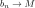
. Then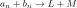
,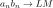
, and, provided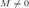
and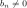
for all,
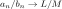
.
Sum. Given  , choose beyond which both
, choose beyond which both
 and
and
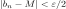
; the triangle inequality gives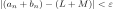
.Product. Write
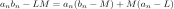
. The sequence is bounded, say by
is bounded, say by 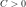
, by the proposition above. Given, choose beyond which
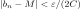
and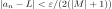
. Then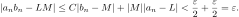
Quotient. It suffices to prove
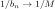
and apply the product rule. Since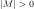
, there is with
with
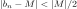
for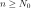
, whence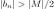
by the reverse triangle inequality. For ,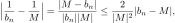
 for large.
for large.
If , and for all
, then
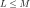
.Suppose
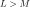
and put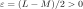
. For large both
 and
and 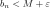
, and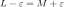
, so – a contradiction.Let
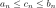
for all, with
and 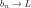
. Then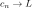
.
Given , choose beyond which
 and . For those
,
and . For those
,
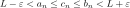
, so .Note what the order statement does not say: strict inequality is not preserved. Taking
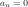
and gives
for every and equal limits. A limit is a
statement about the tail, and strictness is exactly the property a tail
can lose.
gives
for every and equal limits. A limit is a
statement about the tail, and strictness is exactly the property a tail
can lose.